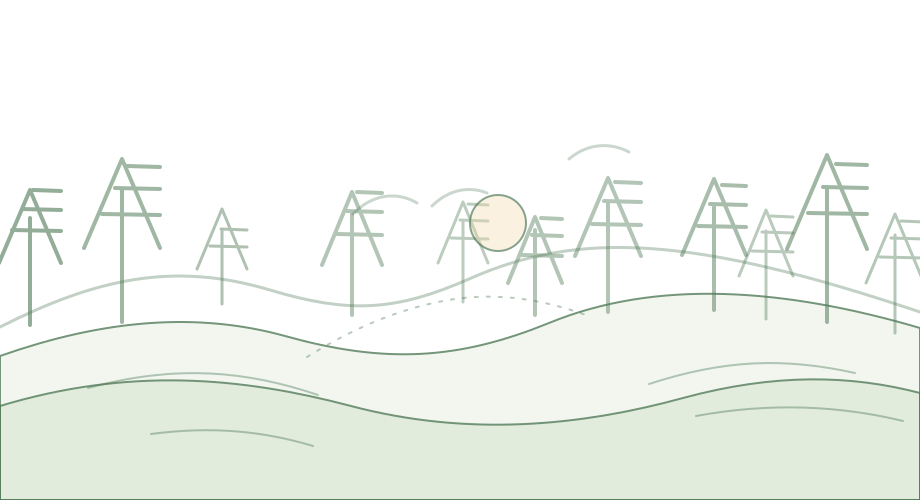

Materialien bewusst vergleichen
Ein guter Entwurf
beginnt mit guten Materialien.
Finde passende ÖKOBAUDAT-Datensätze, vergleiche CO₂-Kennwerte unter gleichen Bezugsbedingungen und erkenne Unterschiede zwischen Produktvarianten. Relative Gruppen gelten nur innerhalb einer passenden Vergleichsgruppe.
DEIN MATERIAL
Womit planst du?
ÖKOBAUDAT-TREFFER
Suchergebnisse
OPTIONALER MODELL-CHECK
Schon ein IFC-Modell?
IFC-Dateien werden lokal im Browser gelesen und nicht hochgeladen. Die A1–A3-Schätzung nutzt nur explizite Materialzuordnungen und Mengen sowie gültige ÖKOBAUDAT-Datensätze. Bei fehlenden Treffern kannst du WECOBIS-Kontext und öffentliche IBU-EPDs manuell prüfen; daraus wird kein ungeprüfter Webwert automatisch eingerechnet.
Noch kein Modell ausgewählt. Native Archicad-PLN-Dateien werden nicht unterstützt.
LOKALE IFC-AUSWERTUNG
Bauteile und A1–A3-Beiträge
| Bauteil | Material / ÖKOBAUDAT-Datensatz | IFC-Menge | A1–A3-Beitrag | Status |
|---|
Drei relative Vergleichsgruppen
Die vorläufige Einteilung beruht ausschließlich auf dem GWP-Wert und gilt nur für gültige Datensätze mit gleicher Kategorie, Einheit, Bezugsmenge, Norm und Lebenszyklusphase sowie passendem Namens-/Technikprofil. Sie ist keine absolute Öko-Bewertung und bestätigt keine technische Gleichwertigkeit.
Rang 1 mit dem niedrigsten GWP-Wert steht zuerst. Im Balken markiert Pastellgrün den besten, Pastellrot den schlechtesten Rang; Rang und Gruppe bleiben zusätzlich als Text sichtbar. Gleiche GWP-Werte werden nicht getrennt und können die Gruppengrößen verändern.
Quellenstatus
ÖKOBAUDAT: Der aktuelle Release und CSV-Export werden von der offiziellen Downloadseite bezogen; Release, Datenstock-ID, Abrufdatum und Cache-Status bleiben nachvollziehbar. Die ÖKOBAUDAT dokumentiert zusätzlich eine standardisierte Datenaustauschschnittstelle. Deren konkreter Lesezugang ist in dieser App nicht angebunden; verwendet wird der offiziell verlinkte CSV-Download. Niedrigere GWP-Werte werden nur als Datensatzvergleich innerhalb einer vorläufigen Vergleichsgruppe gezeigt. Eine belastbare Materialsubstitution anhand gleichwertiger Bauteilfunktionen ist noch nicht angebunden.
WECOBIS: öffentliche Materialinformationen dienen nur als qualitativer Kontext und Quelle für die manuelle Prüfung, nicht als GWP-Faktor. WECOBIS-Baustoffsuche ↗
IBU: öffentliche EPD-PDF/HTML-Seiten können manuell geprüft werden; sie werden derzeit nicht automatisch numerisch ausgewertet. IBU.data-XML-Downloads mit Registrierung werden nicht verwendet. Veröffentlichte IBU-EPDs ↗
Weitere angefragte Quellen – derzeit nicht automatisch angebunden
KBOB, eco-bau, IPB, ProBas, Global EPD, ECO EPD, Ecoinvent, GaBi, Climatiq, DEFRA, DGNB Navigator und weitere Herstellerquellen werden hier nicht numerisch ausgewertet. Für diese Quellen wurden schlüsselfreier öffentlicher Zugriff, maschinenlesbares Format sowie Rechte für Abruf, Speicherung und Weitergabe noch nicht einzeln bestätigt. „IPB“ muss außerdem vor einer Prüfung eindeutig identifiziert werden. Es werden weder API-Schlüssel-Dienste noch geschützte oder ungeklärte Daten importiert.
Allgemeine Websuche: nicht angebunden, da kein zulässiger öffentlicher Suchendpunkt ohne Login/API-Schlüssel konfiguriert ist. Nicht belegbare Beiträge bleiben in der IFC-Auswertung als fehlend markiert und außerhalb der Teilbilanz.
BMWSB, BMWE und BMUKN: noch nicht angebunden. Ergänzende Ökobilanzbelege außerhalb der beschriebenen Quellen werden ebenfalls noch nicht ausgewertet.
Hersteller- und Verbandsdaten: Röben, Wieneberger (Schreibweise wie angefragt), Heinze, Bundesverband Ziegel, HARO, Bauwerk, bembé, Boen, Drüsedau, Grunreben, Hain, Trumpf, ter Hürne, Holz Reinlein, Wimmer, Schotten und Hansen, Meisterwerke, Parador, Parkett-Herter, Kährs, Rockwoll (Schreibweise wie angefragt), Würth, CASEA, formula, one Mineral und Knauf sind nicht als separate Herstellerfeeds integriert. In der lokal verfügbaren ÖKOBAUDAT 2024-III wurden über exakte Suchbegriffe Treffer für Wienerberger (1), Meisterwerke (2), Parador (6), ROCKWOOL (13), Würth (5) und Knauf (84) gefunden; dies sind ÖKOBAUDAT-Datensätze, keine neuen Herstellerfeeds. Für die übrigen exakten Suchbegriffe gab es in diesem Datenstand keine Treffer; das belegt nicht, dass die Hersteller selbst keine Daten anbieten. Abweichende Schreibweisen werden nicht automatisch gleichgesetzt. Öffentliche Produktseiten allein belegen weder einen Ökobilanzwert noch Speicher- oder Weitergaberechte.
Lokale Datenimporte: Im lokalen App-Backend können geprüfte UTF-8-CSV-Datensätze nach Vorschau und expliziter Rechtebestätigung gespeichert werden. Quelle, Produkt, Version, GWP-Norm, Module, Einheit, Bezugsmenge, Gültigkeit und Lizenzhinweis bleiben je Datensatz erhalten. Die Nutzerbestätigung wird nicht als unabhängige Lizenzprüfung ausgegeben. GitHub Pages stellt weder Upload noch lokale Datenbank bereit.
ÖKOBAUDAT: Daten und SchnittstellenEigene Materialdaten hinzufügen
Nur Daten importieren, die du rechtmäßig lokal speichern und in Berechnungen verwenden darfst. Rechte und Herkunft werden vom Importierenden angegeben, aber nicht unabhängig geprüft. Die Datei bleibt auf diesem Computer.
Importvorschau
Lokale Imports
Vorlage: SourceName, SourceRecordId, Version, ProductName, Category, Unit, ReferenceAmount, GwpKgCO2e, Standard, Modules, ValidUntil, SourceUrl, LicenseNotice, SolarReflectancePercent, SolarReflectanceMethod, SolarReflectanceWavelength. GWP ist nur für EN 15804+A2 / A1-A3 zulässig. Solarreflexion ist unabhängig und braucht Messmethode sowie Wellenlängenbereich. Ungültige, abgelaufene oder widersprüchliche Werte werden nicht still in Berechnungen aufgenommen.